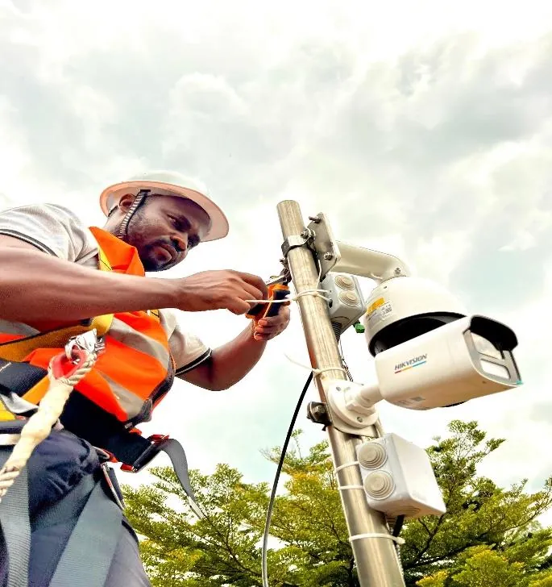
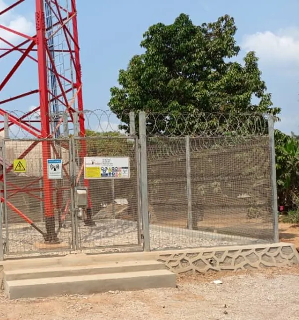
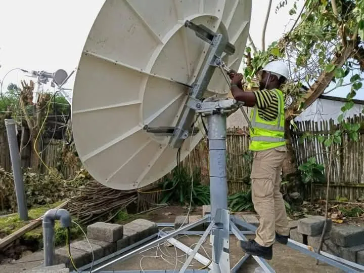
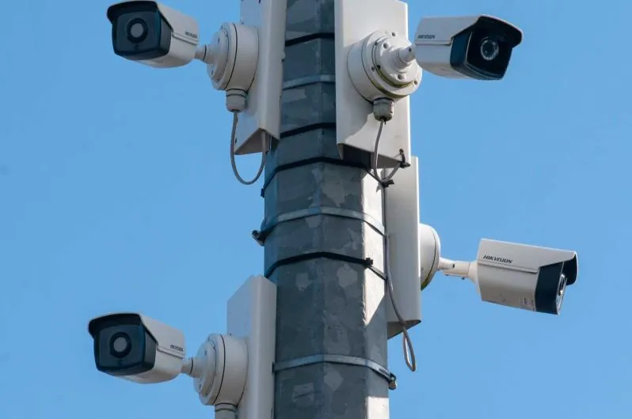
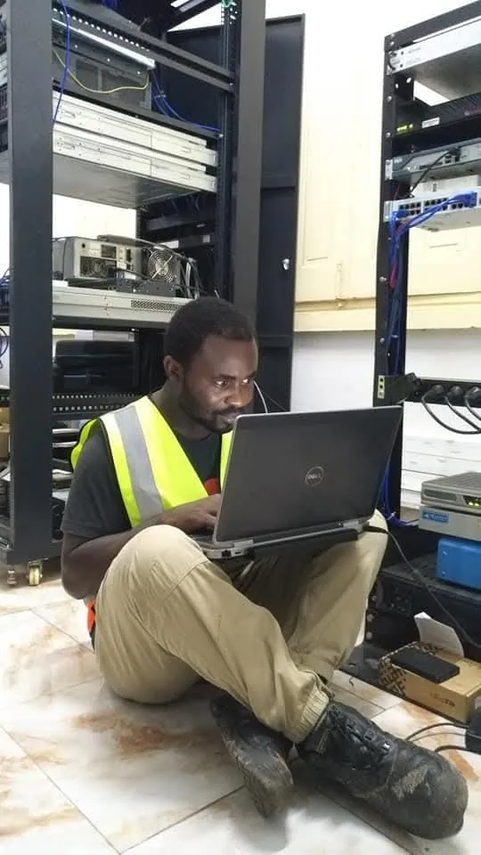

Ingénierie informatique, télécommunications et sécurité électronique
Des solutions fiableset durables pour vostechnologies et réseaux
IT CONSULTING SARL est une société de droit congolais fondée par de jeunes ingénieurs développeurs d’applications. Son siège est à Goma ; elle est représentée en Ouganda, au Soudan du Sud et au Rwanda.



Une société d’ingénieurs au service de vos systèmes
Nous vous proposons des solutions sur mesure, adaptées à vos contraintes et à vos objectifs : des propositions personnalisées et pragmatiques.
IT CONSULTING SARL a été créée par de jeunes ingénieurs développeurs d’applications, concepteurs et programmeurs, avec une ambition précise : pallier les problèmes liés aux nouvelles technologies et à la communication, et y apporter des solutions fiables et durables.
La société revendique une expérience dans six domaines, de la télécommunication aux réseaux informatiques, de la sécurité électronique à l’audit informatique, auxquels s’ajoutent l’imprimerie et la formation en nouvelles technologies et multimédia. Son offre va de l’installation d’un système de vidéosurveillance à la conception d’un réseau, du déploiement d’un logiciel à la construction d’un pylône.
Nos domaines d’intervention
Six pôles couvrant l’ensemble des prestations décrites dans le profil de l’entreprise, chacun détaillé sur sa propre page.

Sécurité électronique
CCTV, alarmes, détecteurs de mouvement et de présence : installation, configuration et maintenance.
Découvrir
Réseaux et télécommunications
Conception de réseaux LAN, MAN, PAN et WAN, installations wireless, transmission et maintenance des serveurs.
DécouvrirLogiciels et conseil informatique
Audit informatique, conception et déploiement de logiciels, maintenance de bases de données.
DécouvrirContinuité d’activité et connectivité
Service Business Continuity Plan : rester connecté partout, y compris en site isolé, grâce à la technologie VSAT et à d’autres solutions.
DécouvrirGénie civil : construction de pylônes
Construction de pylônes de télécommunication, de la fondation à la tour.
DécouvrirFormation et imprimerie
Formation en nouvelles technologies et multimédia ; services d’imprimerie.
DécouvrirNotre démarche
Écouter, formaliser, proposer, mettre en œuvre, assister.
Écouter et formaliser
« Nous vous écoutons et participons à la formalisation de vos besoins », indique le profil.
Proposer sur mesure
Des propositions personnalisées et pragmatiques, adaptées à vos contraintes et à vos objectifs.
Installer et configurer
Équipements informatiques, de télécommunication et de sécurité ; réseaux ; logiciels et déploiement.
Maintenir et assister
Maintenance et support technique efficace, pour un travail sans rupture.
Ces quatre temps reprennent les engagements formulés dans le profil de l’entreprise ; leur déroulé précis dépend de chaque projet et est confirmé dans le devis.
Être la meilleure entreprise de prestation de services dans les domaines de la PTNTIC en République démocratique du Congo en particulier et en Afrique en général. Être la référence dans la sécurité électronique.
Apporter à nos partenaires un support technique efficace et en temps réel, pour leur permettre un travail sans rupture, avec moins de pertes liées aux dysfonctionnements.
Questions fréquentes
Où IT CONSULTING SARL est-elle implantée ?
Le siège social est à Goma, dans la province du Nord-Kivu (République démocratique du Congo). Le profil mentionne d’autres représentations en Ouganda, au Soudan du Sud et au Rwanda, avec des coordonnées pour Kampala et Juba. Consultez la page Implantations.
Quelle est la différence entre 2016 et 2018 dans votre présentation ?
Le profil indique une expérience avérée dans ses domaines « depuis la création en 2016 », et précise que la société, société à responsabilité limitée, a été créée le 25 janvier 2018. Son immatriculation au Registre du Commerce et du Crédit Mobilier porte la référence CD/GOM/RCCM/18-B-0676.
Comment obtenir une proposition ?
Utilisez le formulaire de demande de devis en décrivant votre site, vos équipements existants et vos objectifs. Vous pouvez aussi écrire à contact@itconsultinggroup.net ou appeler l’un des numéros indiqués sur la page Contact.
Parlons de votre projet
Décrivez votre besoin : nous reviendrons vers vous avec une proposition personnalisée et pragmatique.